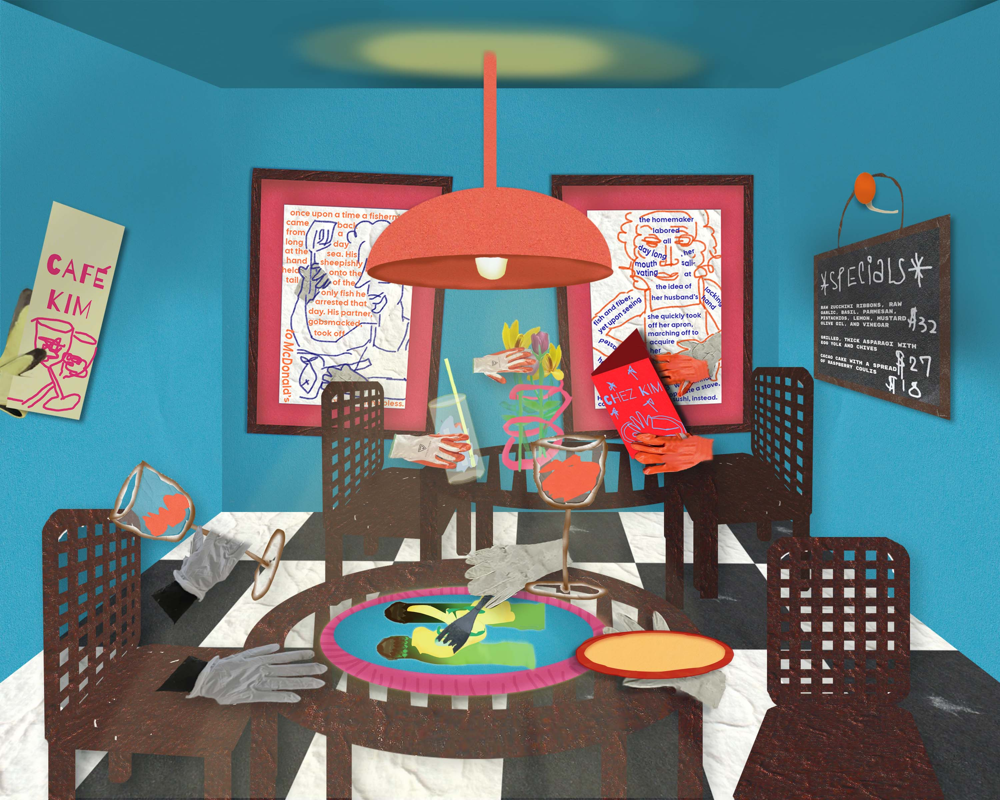

Stephanie Kim
Hi, I’m Stephanie Kim and I’m a creative in the arts and technology. I’ve been collecting pictures of random litter like gloves and beverage bottles all over New York that most people overlook, but to me, there’s so much history to this one data point!
I love mixing scanned images and photos into designs and animations. Through these mediums, I’m exploring the idea of recomposing digital graphics.
Additionally, I’m a big film nerd and love anything related to French New Wave, Whit Stillman, or any talkies.
